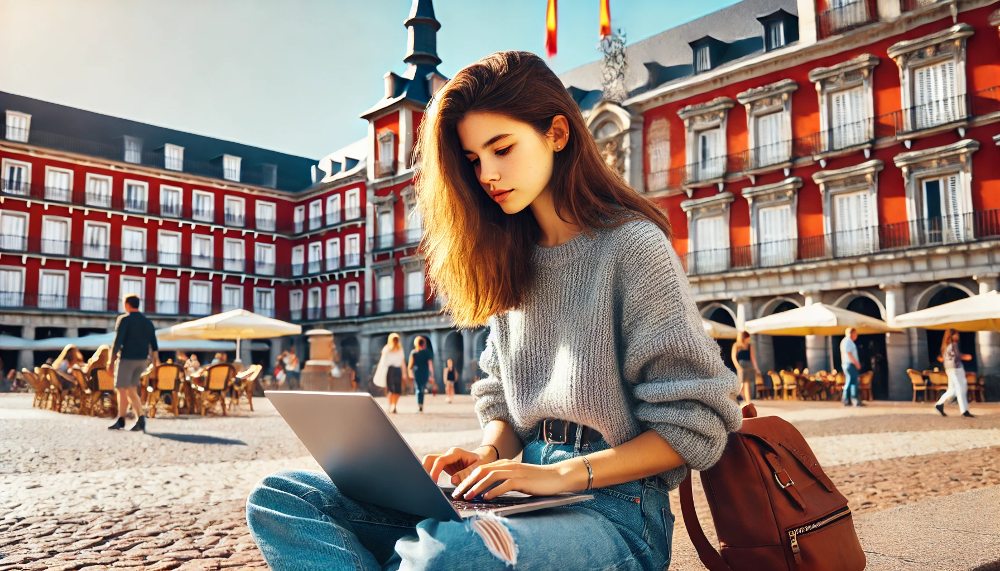

MADRID, ARTE Y BULLICIO

Madrid es una ciudad que nunca duerme, un lugar donde la energía de sus calles se siente desde el amanecer hasta el anochecer. Mi viaje comenzó en la icónica Puerta del Sol, el punto de encuentro por excelencia. Desde allí, me adentré en el casco antiguo, paseando por la Plaza Mayor, con sus soportales históricos y terrazas llenas de vida. No muy lejos, el Palacio Real me dejó impresionado con su imponente arquitectura y la grandeza de sus jardines. Pero lo que más me cautivó de Madrid fue su capacidad de combinar lo tradicional con lo moderno. En el barrio de Malasaña, descubrí el lado más alternativo de la ciudad: calles llenas de arte urbano, cafeterías de diseño y pequeñas librerías que parecían salidas de un cuento. Madrid tiene ese toque único de bullicio constante que te hace sentir vivo en cada esquina.
Si algo define a Madrid, es su comida. Desde las tabernas tradicionales hasta los modernos mercados gastronómicos, cada plato es una invitación a saborear la cultura española. En mi primera noche, me dirigí al Mercado de San Miguel, donde probé una selección de tapas que iban desde el clásico jamón ibérico hasta croquetas caseras que se deshacían en la boca. Por supuesto, no podía faltar una tortilla de patatas acompañada de una copa de vino tinto. Durante mis paseos, también descubrí el cocido madrileño, un plato reconfortante que me hizo sentir como en casa. Las noches en Madrid están hechas para disfrutar sin prisa: un vermú en una terraza, seguido de churros con chocolate caliente en la famosa Chocolatería San Ginés. Aquí, cada comida es un ritual y cada sobremesa, una excusa para compartir historias.
Madrid es una ciudad de arte, y eso se siente en cada rincón. Mi visita al Museo del Prado fue un verdadero viaje por la historia del arte. Frente a obras como Las Meninas de Velázquez y El jardín de las delicias de El Bosco, me perdí en los detalles, sintiendo que estaba frente a auténticos tesoros. También pasé por el Museo Reina Sofía, donde El Guernica de Picasso me dejó sin aliento. Sin embargo, el arte en Madrid no solo está en los museos; el Parque del Retiro, con su Palacio de Cristal y su ambiente relajado, es una obra de arte al aire libre. Mi último día lo dediqué al Rastro, el mercadillo más famoso de la ciudad. Entre antigüedades y curiosidades, sentí el pulso auténtico de Madrid, ese bullicio que te atrapa y te invita a regresar una y otra vez. Madrid no es solo una ciudad; es una experiencia que te envuelve con su arte, su sabor y su inconfundible espíritu.